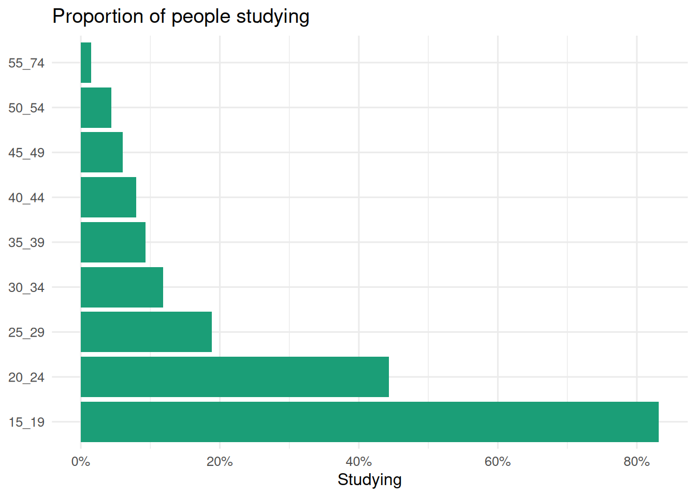
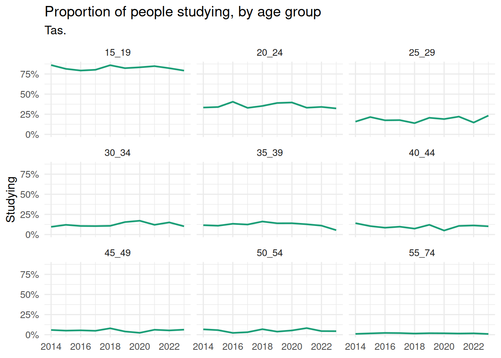

1 Don’t re-read yourself
Imagine you open an R script you wrote a few months ago, and you cannot follow it. Well, you can read it, but it takes you a couple of goes. This chapter is about writing code you do not have to re-read. We are going to look at ways to say what you meant the first time.
Overview
Duration 60 minutes
Questions
- What can you do by the end of this course?
- What is wrong with writing the same line of code many times?
- How do I build a file path without typing it out?
- How do I turn working code into a function?
- What is DRRY, and how is it different from DRY?
What you need this session
- A session of RStudio open
- The course data. Download
fun2debug-data.zipfrom https://fun2debug.njtierney.com/data/ and unzip it so that a folder calleddatasits next to the script you are writing in. Then open that folder as an RStudio project, or set your working directory to it, so thatlist.files("data/tidy")shows you ten files.
1.1 Where we are going
Somewhat like a cooking show, we are going to show you what we are making first. It is a short script, with a few functions. By the end of the course week, you will be able to write code like this:


The reason I think this is a worthwhile goal is that you can reason with each of these lines of code. Each line tells you what it is doing. This is sometimes called “self-documenting code”.
This is education data from the Australian Bureau of Statistics. It felt apt, since we had the census somewhat recently, on August 11, 2026.
To give us a direction, we are going to focus on answering this question:
How many Australians are studying, by age group and by state, and is that changing?
Let’s talk about reading in some education data.
1.2 Reading ten files
The data is one file per year, from 2014 to 2023.
[1] "education_2014.csv" "education_2015.csv" "education_2016.csv"
[4] "education_2017.csv" "education_2018.csv" "education_2019.csv"
[7] "education_2020.csv" "education_2021.csv" "education_2022.csv"
[10] "education_2023.csv"Let’s read one of them:
Rows: 72 Columns: 5
── Column specification ────────────────────────────────────────────────────────
Delimiter: ","
chr (2): state_territory, age_group
dbl (3): n_studying, population, prop_studying
ℹ Use `spec()` to retrieve the full column specification for this data.
ℹ Specify the column types or set `show_col_types = FALSE` to quiet this message.# A tibble: 72 × 5
state_territory age_group n_studying population prop_studying
<chr> <chr> <dbl> <dbl> <dbl>
1 ACT 15_19 22.9 25.8 0.888
2 ACT 20_24 17.1 35.2 0.486
3 ACT 25_29 7.5 40.1 0.187
4 ACT 30_34 3.6 40 0.09
5 ACT 35_39 3.5 36.8 0.0951
6 ACT 40_44 3.6 34 0.106
7 ACT 45_49 1.2 28.8 0.0417
8 ACT 50_54 0.9 27.1 0.0332
9 ACT 55_74 1.5 79.1 0.0190
10 NSW 15_19 400. 487. 0.820
# ℹ 62 more rowsEach row is for a given age group (age_group) at a given state (state_territory). It contains information on the number of people studying (n_studying), the population (population), and the proportion studying (prop_studying). The counts are in the thousands. So the first row has 22,900 people, and is not 22.9 people(!).
Notice that year is not in there?
That lives in the file name:
This is pretty common. But still a bit annoying. We will get back to it.
If we want all 10 files read in, how should we do this?
- What is different between the ten file paths? What is the same?
ed_2014 <- read_csv("data/tidy/education_2014.csv")
ed_2015 <- read_csv("data/tidy/education_2015.csv")
ed_2016 <- read_csv("data/tidy/education_2016.csv")
ed_2017 <- read_csv("data/tidy/education_2017.csv")
ed_2018 <- read_csv("data/tidy/education_2018.csv")
ed_2019 <- read_csv("data/tidy/education_2019.csv")
ed_2020 <- read_csv("data/tidy/education_2020.csv")
ed_2021 <- read_csv("data/tidy/education_2021.csv")
ed_2022 <- read_csv("data/tidy/education_2022.csv")
ed_2023 <- read_csv("data/tidy/education_2023.csv")- Are there any potential problems you can foresee?
There are no wrong answers!
There are issues with code like:
ed_2014 <- read_csv("data/tidy/education_2014.csv")
ed_2015 <- read_csv("data/tidy/education_2015.csv")
ed_2016 <- read_csv("data/tidy/education_2016.csv")
ed_2017 <- read_csv("data/tidy/education_2017.csv")
ed_2018 <- read_csv("data/tidy/education_2018.csv")
ed_2019 <- read_csv("data/tidy/education_2019.csv")
ed_2020 <- read_csv("data/tidy/education_2020.csv")
ed_2021 <- read_csv("data/tidy/education_2021.csv")
ed_2022 <- read_csv("data/tidy/education_2022.csv")
ed_2023 <- read_csv("data/tidy/education_2023.csv")it feels a bit safe. But it is a bit repetitive!
But what is the thing that is changing across all of these lines of code?
What if we had 50, 100, or 1,000 files like this? The typing starts to become a problem. You might make a mistake in aligning the code with the object. So we start to re-read it just to make sure we haven’t made an easy to make mistake (we didn’t though, but you don’t know that)
Takehomes
- Repeated code is cheap to write, but can cost you time.
- Identifying problems takes energy, even if there are no problems.
1.3 Building the path
Let’s start with the part that changes, which is the file path.
Rather than typing the whole file path out each time, can you identify the pattern? Here’s the code again, with just the file path:
"data/tidy/education_2014.csv"
"data/tidy/education_2015.csv"
"data/tidy/education_2016.csv"
"data/tidy/education_2017.csv"
"data/tidy/education_2018.csv"
"data/tidy/education_2019.csv"
"data/tidy/education_2020.csv"
"data/tidy/education_2021.csv"
"data/tidy/education_2022.csv"
"data/tidy/education_2023.csv"We can use the {glue} package to make these file paths:
glue() will build it for you. Anything inside curly braces gets swapped for its value.
data/tidy/education_2023.csvdata/tidy/education_2020.csvIt reads like the sentence you would say out loud.
You could also use paste() and paste0():
[1] "data/tidy/education_2023.csv"[1] "data/tidy/education_2023.csv"But I think glue is worth learning about! You can read a bit more at a blog post I wrote, “Glue Magic Part I”.
One more thing about file paths! The path above is relative to wherever R happens to be sitting. Which can be not where you always expect.
We can use the here() function from {here} to anchor the path to where your “.RProj” is.
data/tidy/education_2023.csv[1] "/home/runner/work/fun2debug/fun2debug/data/tidy/education_2023.csv"There is a longer treatment of {here} and project oriented workflow in R Best Practices, at The {here} package.
Now pipe that into read_csv().
Rows: 72 Columns: 5
── Column specification ────────────────────────────────────────────────────────
Delimiter: ","
chr (2): state_territory, age_group
dbl (3): n_studying, population, prop_studying
ℹ Use `spec()` to retrieve the full column specification for this data.
ℹ Specify the column types or set `show_col_types = FALSE` to quiet this message.# A tibble: 72 × 5
state_territory age_group n_studying population prop_studying
<chr> <chr> <dbl> <dbl> <dbl>
1 ACT 15_19 22.9 25.8 0.888
2 ACT 20_24 17.1 35.2 0.486
3 ACT 25_29 7.5 40.1 0.187
4 ACT 30_34 3.6 40 0.09
5 ACT 35_39 3.5 36.8 0.0951
6 ACT 40_44 3.6 34 0.106
7 ACT 45_49 1.2 28.8 0.0417
8 ACT 50_54 0.9 27.1 0.0332
9 ACT 55_74 1.5 79.1 0.0190
10 NSW 15_19 400. 487. 0.820
# ℹ 62 more rowsNotice that we have separated the file path out into its own step. But it requires specifying what year is each time:
So we’ve sort of taken one step forward, two steps back, right now.
Let’s talk about turning that part into a function.
ed_2014 <- read_csv("data/tidy/education_2014.csv")
ed_2015 <- read_csv("data/tidy/education_2015.csv")
ed_2016 <- read_csv("data/tidy/education_2016.csv")
ed_2017 <- read_csv("data/tidy/education_2017.csv")
ed_2018 <- read_csv("data/tidy/education_2018.csv")
ed_2019 <- read_csv("data/tidy/education_2019.csv")
ed_2020 <- read_csv("data/tidy/education_2020.csv")
ed_2021 <- read_csv("data/tidy/education_2021.csv")
ed_2022 <- read_csv("data/tidy/education_2022.csv")
ed_2023 <- read_csv("data/tidy/education_2023.csv")Takehomes
glue()builds a string by putting values inside{ }here()anchors a path to the top of your project- Pulling the changing part into its own step is a start, not the finish
1.4 Turning it into a function
A function in R has three parts:
- A name.
- arguments, the things that change, and
- body, the code that runs
Let’s make a function that creates the file path:
[1] "/home/runner/work/fun2debug/fun2debug/data/tidy/education_2023.csv"[1] "/home/runner/work/fun2debug/fun2debug/data/tidy/education_2022.csv"[1] "/home/runner/work/fun2debug/fun2debug/data/tidy/education_2021.csv"Now we can use that like so:
Rows: 72 Columns: 5
── Column specification ────────────────────────────────────────────────────────
Delimiter: ","
chr (2): state_territory, age_group
dbl (3): n_studying, population, prop_studying
ℹ Use `spec()` to retrieve the full column specification for this data.
ℹ Specify the column types or set `show_col_types = FALSE` to quiet this message.Rows: 72 Columns: 5
── Column specification ────────────────────────────────────────────────────────
Delimiter: ","
chr (2): state_territory, age_group
dbl (3): n_studying, population, prop_studying
ℹ Use `spec()` to retrieve the full column specification for this data.
ℹ Specify the column types or set `show_col_types = FALSE` to quiet this message.Rows: 72 Columns: 5
── Column specification ────────────────────────────────────────────────────────
Delimiter: ","
chr (2): state_territory, age_group
dbl (3): n_studying, population, prop_studying
ℹ Use `spec()` to retrieve the full column specification for this data.
ℹ Specify the column types or set `show_col_types = FALSE` to quiet this message.Notice that read_csv() is repeated each time. Let’s combine those together:
Rows: 72 Columns: 5
── Column specification ────────────────────────────────────────────────────────
Delimiter: ","
chr (2): state_territory, age_group
dbl (3): n_studying, population, prop_studying
ℹ Use `spec()` to retrieve the full column specification for this data.
ℹ Specify the column types or set `show_col_types = FALSE` to quiet this message.Rows: 72 Columns: 5
── Column specification ────────────────────────────────────────────────────────
Delimiter: ","
chr (2): state_territory, age_group
dbl (3): n_studying, population, prop_studying
ℹ Use `spec()` to retrieve the full column specification for this data.
ℹ Specify the column types or set `show_col_types = FALSE` to quiet this message.Rows: 72 Columns: 5
── Column specification ────────────────────────────────────────────────────────
Delimiter: ","
chr (2): state_territory, age_group
dbl (3): n_studying, population, prop_studying
ℹ Use `spec()` to retrieve the full column specification for this data.
ℹ Specify the column types or set `show_col_types = FALSE` to quiet this message.education_path() knows how the files are named.
read_education() knows how to read a path.
This idea that we can put functions together is called: “composing” functions.
It’s a good thing!
We are still doing some repetition, but bear with me here.
- Type out both the
education_path()andread_education()functions yourself, and runread_education(2019). Check you get 72 rows. - What happens if you ask for a year that does not exist, like 2005?
- Are there some other ways to list file names?
- Are there any potential issues with the way we have written this?
- What are the benefits of composing functions like this, where they are separate?
ed_2014 <- read_csv("data/tidy/education_2014.csv")
ed_2015 <- read_csv("data/tidy/education_2015.csv")
ed_2016 <- read_csv("data/tidy/education_2016.csv")
ed_2017 <- read_csv("data/tidy/education_2017.csv")
ed_2018 <- read_csv("data/tidy/education_2018.csv")
ed_2019 <- read_csv("data/tidy/education_2019.csv")
ed_2020 <- read_csv("data/tidy/education_2020.csv")
ed_2021 <- read_csv("data/tidy/education_2021.csv")
ed_2022 <- read_csv("data/tidy/education_2022.csv")
ed_2023 <- read_csv("data/tidy/education_2023.csv")Takehomes
- A function has a name, arguments, and a body
- Small functions can be composed together
education_path()knows the naming,read_education()knows the reading
1.5 Reading more than one year
Let’s read in three years again:
Each line is now readable. But I cannot do much with them until they are in one table.
But hang on, what is missing? There is no year column, so once these three sit on top of each other there is nothing to tell them apart.
We know which year we asked for, though. So we can put it back by hand, with mutate():
# A tibble: 72 × 6
state_territory age_group n_studying population prop_studying year
<chr> <chr> <dbl> <dbl> <dbl> <dbl>
1 ACT 15_19 22.9 25.8 0.888 2023
2 ACT 20_24 17.1 35.2 0.486 2023
3 ACT 25_29 7.5 40.1 0.187 2023
4 ACT 30_34 3.6 40 0.09 2023
5 ACT 35_39 3.5 36.8 0.0951 2023
6 ACT 40_44 3.6 34 0.106 2023
7 ACT 45_49 1.2 28.8 0.0417 2023
8 ACT 50_54 0.9 27.1 0.0332 2023
9 ACT 55_74 1.5 79.1 0.0190 2023
10 NSW 15_19 400. 487. 0.820 2023
# ℹ 62 more rowsmutate() puts a new column on the far right. Often that is fine. When you want the year up the front where you can see it, mutate() takes .before and .after:
# A tibble: 72 × 6
year state_territory age_group n_studying population prop_studying
<dbl> <chr> <chr> <dbl> <dbl> <dbl>
1 2021 ACT 15_19 22 23.8 0.924
2 2021 ACT 20_24 15.2 30.3 0.502
3 2021 ACT 25_29 6.7 32.1 0.209
4 2021 ACT 30_34 5.3 34.6 0.153
5 2021 ACT 35_39 2.7 35.3 0.0765
6 2021 ACT 40_44 2.4 31 0.0774
7 2021 ACT 45_49 1.5 28.6 0.0524
8 2021 ACT 50_54 0.7 26.4 0.0265
9 2021 ACT 55_74 0.8 78.7 0.0102
10 2021 NSW 15_19 407 462. 0.880
# ℹ 62 more rowsName the column you want it next to, rather than a position. .before = 1 also works, but it stops being true the moment somebody reorders the data.
Now we can stack them, and every row still knows where it came from:
# A tibble: 216 × 6
state_territory age_group n_studying population prop_studying year
<chr> <chr> <dbl> <dbl> <dbl> <dbl>
1 ACT 15_19 22 23.8 0.924 2021
2 ACT 20_24 15.2 30.3 0.502 2021
3 ACT 25_29 6.7 32.1 0.209 2021
4 ACT 30_34 5.3 34.6 0.153 2021
5 ACT 35_39 2.7 35.3 0.0765 2021
6 ACT 40_44 2.4 31 0.0774 2021
7 ACT 45_49 1.5 28.6 0.0524 2021
8 ACT 50_54 0.7 26.4 0.0265 2021
9 ACT 55_74 0.8 78.7 0.0102 2021
10 NSW 15_19 407 462. 0.880 2021
# ℹ 206 more rowsHave a look at those three lines again, though. The year is typed twice on each one, once to read the file and once to label it.
Two copies of the same fact is exactly the thing you have to re-read to check.
So let’s move it into the function, where it only has to be right once:
# A tibble: 72 × 6
state_territory age_group n_studying population prop_studying year
<chr> <chr> <dbl> <dbl> <dbl> <dbl>
1 ACT 15_19 22.9 25.8 0.888 2023
2 ACT 20_24 17.1 35.2 0.486 2023
3 ACT 25_29 7.5 40.1 0.187 2023
4 ACT 30_34 3.6 40 0.09 2023
5 ACT 35_39 3.5 36.8 0.0951 2023
6 ACT 40_44 3.6 34 0.106 2023
7 ACT 45_49 1.2 28.8 0.0417 2023
8 ACT 50_54 0.9 27.1 0.0332 2023
9 ACT 55_74 1.5 79.1 0.0190 2023
10 NSW 15_19 400. 487. 0.820 2023
# ℹ 62 more rowsNobody who calls read_education() has to remember the labelling step now. They just get a year column.
bind_rows() will label the pieces for you. Give it names, and .id writes those names into a column:
# A tibble: 216 × 6
year state_territory age_group n_studying population prop_studying
<chr> <chr> <chr> <dbl> <dbl> <dbl>
1 2021 ACT 15_19 22 23.8 0.924
2 2021 ACT 20_24 15.2 30.3 0.502
3 2021 ACT 25_29 6.7 32.1 0.209
4 2021 ACT 30_34 5.3 34.6 0.153
5 2021 ACT 35_39 2.7 35.3 0.0765
6 2021 ACT 40_44 2.4 31 0.0774
7 2021 ACT 45_49 1.5 28.6 0.0524
8 2021 ACT 50_54 0.7 26.4 0.0265
9 2021 ACT 55_74 0.8 78.7 0.0102
10 2021 NSW 15_19 407 462. 0.880
# ℹ 206 more rowsOne thing to notice. That year column is character, not a number, because names are always text.
The names have to actually reach bind_rows(), too. Hand it three unnamed data frames and .id has nothing to write, so you get 1, 2 and 3 instead of the years. It will not warn you.
This is still one line per year, though, and the year is still typed twice on each of them. We do better than that in the next section.
Setup code
- Read 2014 and 2015, and bind them together.
- What class is that
yearcolumn? Useclass()to check. Is it what you expected? - What would you have to type to do all ten years this way?
Answer
[1] "numeric"It is a number, because we typed a number into mutate().
That will not stay true. The version we finish this chapter with reads the year out of the file name instead, and that arrives as text. It comes back to bite one of us in ?sec-outside-in.
For step 3, ten years this way is eleven lines. Which is roughly where we came in.
ed_2014 <- read_csv("data/tidy/education_2014.csv")
ed_2015 <- read_csv("data/tidy/education_2015.csv")
ed_2016 <- read_csv("data/tidy/education_2016.csv")
ed_2017 <- read_csv("data/tidy/education_2017.csv")
ed_2018 <- read_csv("data/tidy/education_2018.csv")
ed_2019 <- read_csv("data/tidy/education_2019.csv")
ed_2020 <- read_csv("data/tidy/education_2020.csv")
ed_2021 <- read_csv("data/tidy/education_2021.csv")
ed_2022 <- read_csv("data/tidy/education_2022.csv")
ed_2023 <- read_csv("data/tidy/education_2023.csv")Takehomes
- The year lived in the file name, so we have to put it back deliberately
mutate()will add it, one year at a timebind_rows()stacks tables on top of each other- Updating a function means you don’t need to make changes multiple times
1.6 What read_csv already does
Before you write any more of this, let’s go one step at a time.
Here is one year, as a path, and then read in:
[1] "/home/runner/work/fun2debug/fun2debug/data/tidy/education_2021.csv"# A tibble: 72 × 5
state_territory age_group n_studying population prop_studying
<chr> <chr> <dbl> <dbl> <dbl>
1 ACT 15_19 22 23.8 0.924
2 ACT 20_24 15.2 30.3 0.502
3 ACT 25_29 6.7 32.1 0.209
4 ACT 30_34 5.3 34.6 0.153
5 ACT 35_39 2.7 35.3 0.0765
6 ACT 40_44 2.4 31 0.0774
7 ACT 45_49 1.5 28.6 0.0524
8 ACT 50_54 0.7 26.4 0.0265
9 ACT 55_74 0.8 78.7 0.0102
10 NSW 15_19 407 462. 0.880
# ℹ 62 more rowsNow ask for two:
[1] "/home/runner/work/fun2debug/fun2debug/data/tidy/education_2021.csv"
[2] "/home/runner/work/fun2debug/fun2debug/data/tidy/education_2022.csv"# A tibble: 144 × 5
state_territory age_group n_studying population prop_studying
<chr> <chr> <dbl> <dbl> <dbl>
1 ACT 15_19 22 23.8 0.924
2 ACT 20_24 15.2 30.3 0.502
3 ACT 25_29 6.7 32.1 0.209
4 ACT 30_34 5.3 34.6 0.153
5 ACT 35_39 2.7 35.3 0.0765
6 ACT 40_44 2.4 31 0.0774
7 ACT 45_49 1.5 28.6 0.0524
8 ACT 50_54 0.7 26.4 0.0265
9 ACT 55_74 0.8 78.7 0.0102
10 NSW 15_19 407 462. 0.880
# ℹ 134 more rows144 rows. Two paths went in, one table came out, and I never asked for that.
So what about all ten?
[1] "/home/runner/work/fun2debug/fun2debug/data/tidy/education_2014.csv"
[2] "/home/runner/work/fun2debug/fun2debug/data/tidy/education_2015.csv"
[3] "/home/runner/work/fun2debug/fun2debug/data/tidy/education_2016.csv"
[4] "/home/runner/work/fun2debug/fun2debug/data/tidy/education_2017.csv"
[5] "/home/runner/work/fun2debug/fun2debug/data/tidy/education_2018.csv"
[6] "/home/runner/work/fun2debug/fun2debug/data/tidy/education_2019.csv"
[7] "/home/runner/work/fun2debug/fun2debug/data/tidy/education_2020.csv"
[8] "/home/runner/work/fun2debug/fun2debug/data/tidy/education_2021.csv"
[9] "/home/runner/work/fun2debug/fun2debug/data/tidy/education_2022.csv"
[10] "/home/runner/work/fun2debug/fun2debug/data/tidy/education_2023.csv"Neat!
Can we hand all of them to read_csv()?
# A tibble: 720 × 5
state_territory age_group n_studying population prop_studying
<chr> <chr> <dbl> <dbl> <dbl>
1 ACT 15_19 19.3 23.8 0.811
2 ACT 20_24 18.1 31.6 0.573
3 ACT 25_29 9.4 34.9 0.269
4 ACT 30_34 4.5 32.8 0.137
5 ACT 35_39 4.5 28.7 0.157
6 ACT 40_44 2.6 28.4 0.0915
7 ACT 45_49 1 24.2 0.0413
8 ACT 50_54 3 24 0.125
9 ACT 55_74 2.1 67.2 0.0312
10 NSW 15_19 388. 462. 0.841
# ℹ 710 more rows720 rows. Wow!
This works for two reasons:
glue()builds ten paths when you give it ten years, andread_csv()will take all ten and stack them for you.
read_csv() will also tell you which file each row came from, with id.
That argument only exists because read_csv() takes a vector of paths. You give it a column name, and it stores the file path in that column.
# A tibble: 144 × 6
path state_territory age_group n_studying population prop_studying
<chr> <chr> <chr> <dbl> <dbl> <dbl>
1 /home/runner/w… ACT 15_19 19.9 23.9 0.833
2 /home/runner/w… ACT 20_24 13.9 27.8 0.5
3 /home/runner/w… ACT 25_29 7.3 33.1 0.221
4 /home/runner/w… ACT 30_34 4.1 33.3 0.123
5 /home/runner/w… ACT 35_39 2.1 34.1 0.0616
6 /home/runner/w… ACT 40_44 3.1 32.3 0.0960
7 /home/runner/w… ACT 45_49 1.2 27.9 0.0430
8 /home/runner/w… ACT 50_54 2.5 26.8 0.0933
9 /home/runner/w… ACT 55_74 1.9 77.3 0.0246
10 /home/runner/w… NSW 15_19 402. 473. 0.849
# ℹ 134 more rowsNotice what you get. You choose what the column is called, but not what goes in it. It is always the path. So id is not a way to hand the years through, it is a record of which file each row came from, and the year is sitting inside that record.
So a good deal of what I was about to write by hand is already sitting in readr.
This is a good outcome rather than a waste of time!
Checking whether the problem is solved already is a habit worth having, and having a go yourself first is a decent way to find out what words to search for.
The year is still sitting in that path. Let’s get it back out, one step at a time.
Here is a single path to work with:
[1] "/home/runner/work/fun2debug/fun2debug/data/tidy/education_2014.csv"basename() throws away the folders and keeps the file name:
That step matters more than it looks. parse_number() takes the first number it finds, and my home folder is called nick_1. Skip basename() and the year comes out as 1.
parse_number() pulls the number out of what is left:
Those steps are one idea. Get the year out of a path. So let’s give that idea a name:
Now let’s put all of that inside the function.
# A tibble: 720 × 6
state_territory age_group n_studying population prop_studying year
<chr> <chr> <dbl> <dbl> <dbl> <dbl>
1 ACT 15_19 19.3 23.8 0.811 2014
2 ACT 20_24 18.1 31.6 0.573 2014
3 ACT 25_29 9.4 34.9 0.269 2014
4 ACT 30_34 4.5 32.8 0.137 2014
5 ACT 35_39 4.5 28.7 0.157 2014
6 ACT 40_44 2.6 28.4 0.0915 2014
7 ACT 45_49 1 24.2 0.0413 2014
8 ACT 50_54 3 24 0.125 2014
9 ACT 55_74 2.1 67.2 0.0312 2014
10 NSW 15_19 388. 462. 0.841 2014
# ℹ 710 more rowsOne line now gets you every year, with the year labelled.
Three functions now, and each one knows a single thing. education_path() knows how the files are named, year_from_path() knows how to undo that, and read_education() knows how to read.
And notice where the fix went. It went inside read_education(), so everything that ever calls it gets the year column, and nobody who calls it had to change.
ed_2014 <- read_csv("data/tidy/education_2014.csv")
ed_2015 <- read_csv("data/tidy/education_2015.csv")
ed_2016 <- read_csv("data/tidy/education_2016.csv")
ed_2017 <- read_csv("data/tidy/education_2017.csv")
ed_2018 <- read_csv("data/tidy/education_2018.csv")
ed_2019 <- read_csv("data/tidy/education_2019.csv")
ed_2020 <- read_csv("data/tidy/education_2020.csv")
ed_2021 <- read_csv("data/tidy/education_2021.csv")
ed_2022 <- read_csv("data/tidy/education_2022.csv")
ed_2023 <- read_csv("data/tidy/education_2023.csv")Takehomes
read_csv()takes a vector of paths and stacks them for youread_csv(id = )records which file each row came from- Run
basename()beforeparse_number(), or you parse a number out of a folder name - A chain of steps with one job between them is a function waiting for a name
- Check whether somebody has solved it already
- When a function grows a fix, every caller gets it for free
1.7 Don’t re-read yourself
We started this hour with ten lines, and we have finished with one line that says what it does.
In programming, the term DRY comes up a bit
DRY stands for Don’t Repeat Yourself. It says that if you find yourself copying and pasting the same code, write a function instead. Ten read_csv() lines, one function. DRY is right about that, and I am not arguing with it.
But I do not think repetition was ever the real problem. Repetition is a symptom.
You end up repeating yourself because you couldn’t say the idea in one go. If the idea had a name, you’d have used the name. So the cause is expression, and repeated code is what unexpressed ideas look like from outside.
The version I prefer is DRRY: Don’t Re-Read Yourself.1
The trigger is not “have I typed this three times”. It is “will I have to read this again to work out what it does”.
That fires earlier, and it fires more often. Look back at the version we finished with:
You do not re-read that. You read the name, you believe it, and you get on with the analysis.
ed_2014 <- read_csv("data/tidy/education_2014.csv")
ed_2015 <- read_csv("data/tidy/education_2015.csv")
ed_2016 <- read_csv("data/tidy/education_2016.csv")
ed_2017 <- read_csv("data/tidy/education_2017.csv")
ed_2018 <- read_csv("data/tidy/education_2018.csv")
ed_2019 <- read_csv("data/tidy/education_2019.csv")
ed_2020 <- read_csv("data/tidy/education_2020.csv")
ed_2021 <- read_csv("data/tidy/education_2021.csv")
ed_2022 <- read_csv("data/tidy/education_2022.csv")
ed_2023 <- read_csv("data/tidy/education_2023.csv")Takehomes
- DRY says do not repeat yourself, and it is right
- DRRY says do not re-read yourself, and it fires earlier and more often
- Everything DRY catches, DRRY catches too
Summary
- Re-reading is the cost. Repetition is one way to pay it, and not the only one.
glue()andhere()build a path that reads like a sentence and works from anywhere.- Split what changes from what reads.
education_path()andread_education()know different things. read_csv(id = )andparse_number()put back the information that lived in the file name.- Check whether it exists first.
read_csv()reads ten files on its own. - A function is where a fix goes, so every caller gets it without asking.
Next session we pull a function apart properly, and start doing something with all this data.
Links
Naming credit to Miles McBain.↩︎